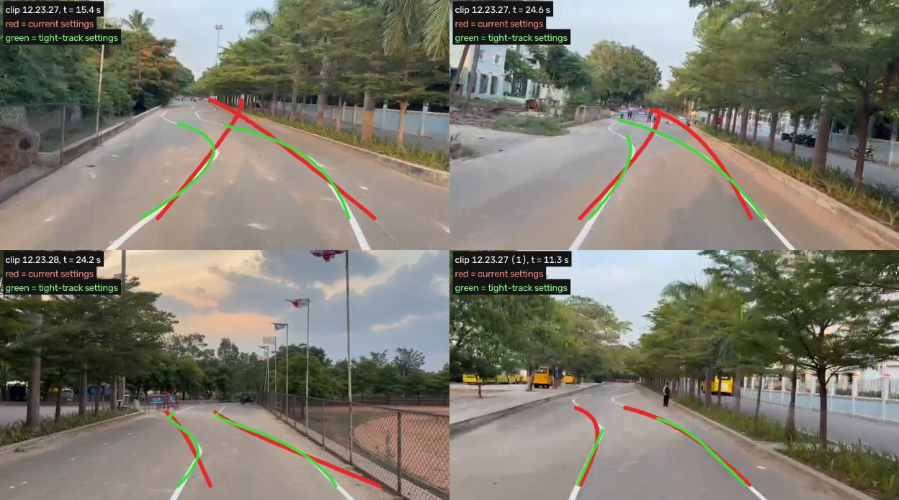

A camera finds two painted lines; the software keeps the car between them
Lane Keeping Assist (LKA) for the aBaja 2026 Baja runs 20 times a second: find the lines, decide the steering, limit it, send it. Click any step below to see what it does, in plain words, and which file does it.
New to all of this?
Open the Lane-fit lab and drag the sliders. In two minutes you will see why the college lane came out straight.
Want the theory?
The Steering lab turns pure pursuit, curvature and turning radius into something you can move with a slider.
Need to run something?
Run it builds the exact MATLAB command for your video, ready to copy.
The full written guide (component breakdown, flaws, learning plan, glossary) is the team document LKA Simulink Project Guide. The code fix is on branch ccr-586dff79-exyk2l of the repository.
Watch one curve try to trace a snake lane
This is the real search-and-fit logic from lka_search_boundary.m and lka_fit_boundary.m, rewritten in the browser. White = painted lines. Orange = today's official-track settings. Blue = the new tight-track settings. Start with the sample, then make the bends tighter.
Top view, car at the bottom driving up. Sideways distances are drawn 2× larger so small bends are visible. The shaded band is the road the camera cannot see.
What each setting found
Error = the largest distance between the fitted line and the paint, over the range the fit covers. Above 0.25 m the new straight-lane alarm would fire.
Try these
- Press Official track: both settings agree, because one curve can follow a gentle bend.
- Press College sample: the orange lines cut straight across the S. That is exactly what the annotated videos showed.
- Drag Bend length from 60 m down to 8 m and watch the orange error grow while blue stays small.
- Move Furthest road used down to 12 m: the orange fit improves, because it has fewer bends to average. That is why the tight settings shorten the fitted range.
- Drag First road the camera sees to 7 m: more of every bend is hidden. A better camera mount helps as much as code.
Aim at a point ahead, drive the circle that reaches it
This is lka_pure_pursuit.m and lka_curvature_to_steer.m. Set where the lane is, and see the steering the LKA asks for, the circle it would drive, and whether the safety limits cut it.
Top view, equal scale, grid every 1 m. Yellow dashes: estimated lane centre. Dot: the look-ahead point. Blue: the circle pure pursuit asks for.
What the LKA commands
Formulas: target yT = y + ψ·Ld + κ·Ld²/2; curvature κPP = 2·yT / (Ld² + yT²); wheel angle δ = atan(κ·(L + Kus·v²)) with L = 1.45 m.
Things to notice
- Longer look-ahead = gentler steering. Shorter = sharper, and above some speed it starts to swing (the S5 crooked-start story in the docs).
- With the lane perfectly centred on a bend, steering is not zero: the bend itself is fed forward.
- Push the speed up on a tight bend: the 3 m/s² sideways-push limit starts cutting the command.
MATLAB, one line at a time
Two real excerpts from the repository. Click a line to see what it means in plain English. Lines with a red edge are where the straight-lane problem started.
Tuned for 127 m bends, shown 3–8 m bends
Every camera setting was tuned for the official track. Five of them pushed the snake lane towards a straight line. One switch, lka_set_track_profile(LKA, 'tight'), now changes all five; the official settings stay the default.

How far the fitted line is from the paint
Worst 10 % of frames, at each distance past the first road row the camera sees. Lower is better.
The five causes
| # | What happened | Fixed by (tight profile) |
|---|---|---|
| 1 | Paint seen over less than 8 m was fitted with a straight line, up to 15 m with one arc. An S averages to almost straight. Main cause. | Arc from 3 m, S-shape from 6 m; fitted range shortened until the curve sits on the paint |
| 2 | The search extended the line straight ahead and lost tight bends. | Extends it as a curve; widens the window after a miss |
| 3 | Lines bending tighter than 10 m radius were thrown away, twice. | Limit set from the track's tightest bend (2.4 m for MinRadius 3) |
| 4 | Direction and bend were judged at the rear axle, 4–6 m behind the first visible road. | Judged at the first visible road row |
| 5 | The controller's checks used the rear axle too and dropped 23–63 % of good lines. | Checks made 4 m ahead |
Before and after, per clip
| Clip | Lane bend seen, before → after [1/m] | Both lines accepted by the controller |
|---|---|---|
| 12.23.27 | 0.038 → 0.147 | 69 % → 94 % |
| 12.23.27 (1) | 0.020 → 0.092 | 89 % → 94 % |
| 12.23.28 | 0.035 → 0.150 | 47 % → 81 % |
Lane bend = 90th percentile of the lane-centre curvature reaching the controller. Not yet re-run in MATLAB with the team CNN.
Fill in the blanks, copy the command
Choose what you want to do. The box below writes the exact MATLAB line. Paste it into MATLAB's Command Window after run('config/startup.m').
Three days to useful, four weeks to confident
Each step ends with something you do in the repository. Tick it off when done. Study loop for every step: read, run, change one number, predict, check, explain it to a teammate.
Twelve questions, every answer explained
Pick an answer; the explanation appears straight away. Wrong answers are where the learning is.